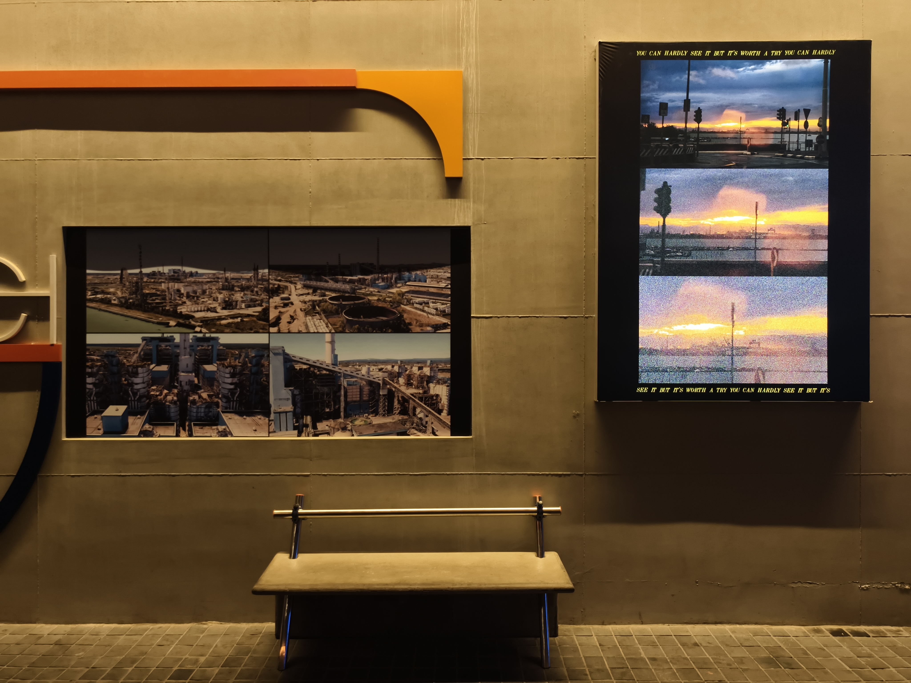

创作
你很难看见...

《你很难看见...》，灯箱摄影，2024
简介
解放桥（Ponte della Libertà）是游客和艺术家从 Mestre 地区登陆威尼斯岛的必经之路，因其悠久的历史和周遭如画的风景而备受赞誉。然而，当经由解放桥所承载的铁路和公共交通快速经过该地区时，海洋对岸 Moranzani 地区和 Fusina 港口的现代工业设施往往也被一带而过，被优美的海洋风光所遮蔽。
值得注意的是，正是这些容易遭到忽略的工业景观才是真正奠定了威尼斯今日面貌的基础：不仅持续生产着现代威尼斯赖以维系的社会经济命脉，也因其对地下水的大肆攫取而被认为是威尼斯土地沉降的罪魁祸首之一。现代威尼斯的工业背景以一种看似强调的方式被刻意隐去了：尽管闻名遐迩的威尼斯双年展以威尼斯的工业重镇“军械库”作为主展馆，这些工业基础设施却往往隐居幕后，躲藏在如画景观／生态末日景观的角落之中，沦为通往艺术圣殿的快速道路上的匆匆一瞥。
我们能够真正看见被藏匿起来的工业现实吗？如果可以的话，这势必意味着一种洞穿景观表象的观看方法：也许我们需要一场视觉技术的密谋……

《你很难看见...》，谷歌地图数字影像，2024

作为摄影装置作品于南京 D9 街区“D9艺术驻留计划”展出，2024